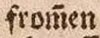

Level 2
Kürzungsstriche, die als Balken oder geschlängelte Linie über Buchstaben stehen und als Substituenten für ausgelassene Zeichen stehen, werden grundsätzlich als Kombination von zwei Zeichen betrachtet. Es wird eine Zeichenkombination: aus dem Graphem und der übergestellte Tilde gebildet. Dazu wird der Unicode U+0303, COMBINING TILDE genutzt.
| Vorlage | Transkription |
|---|---|
|  | from̃en |
 |
Uñ macht |